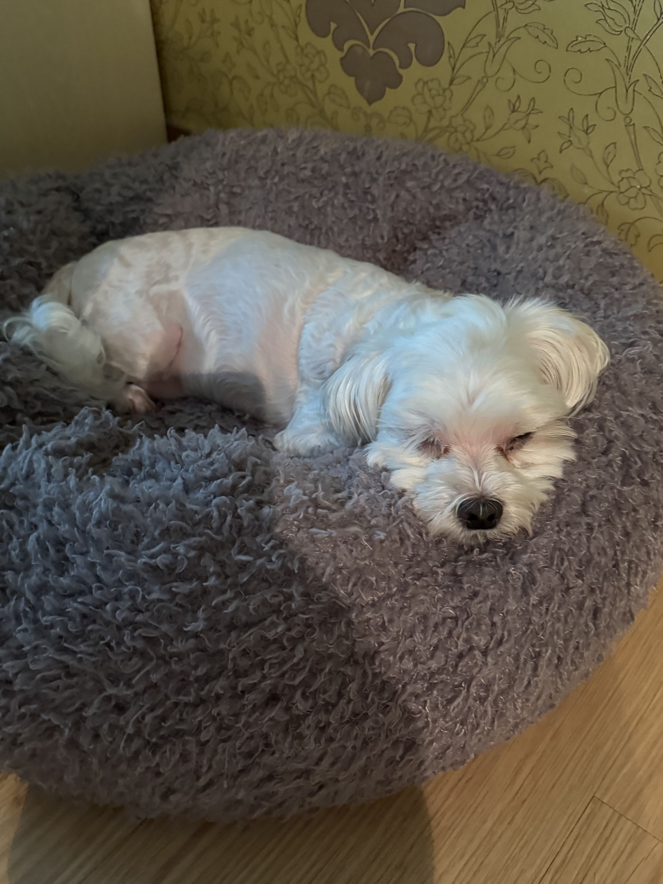
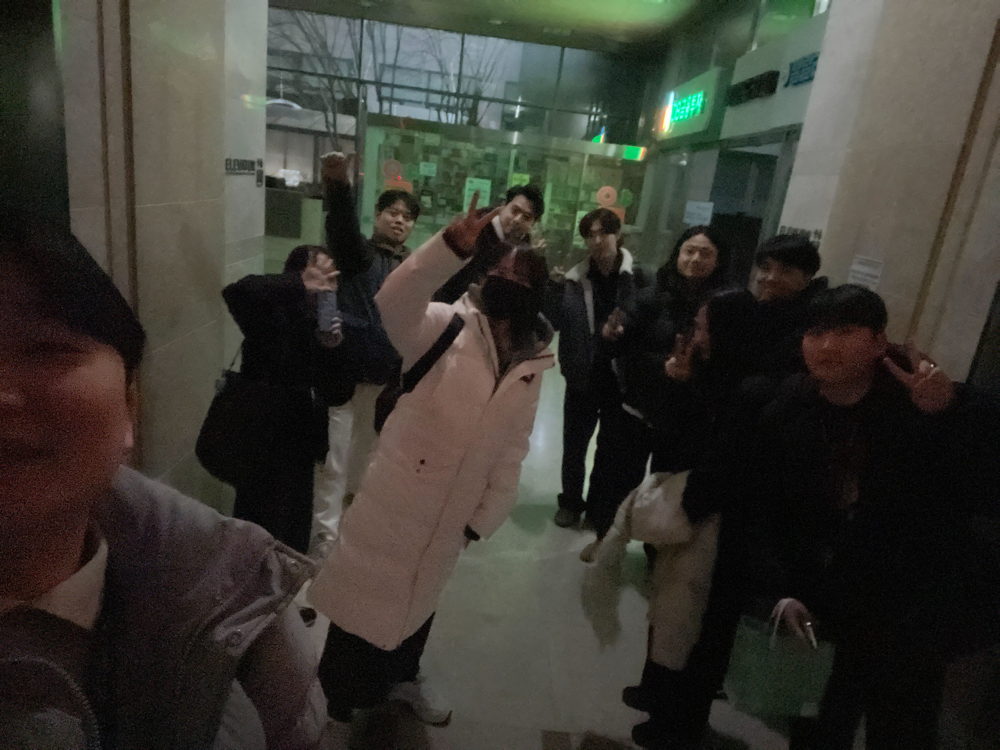
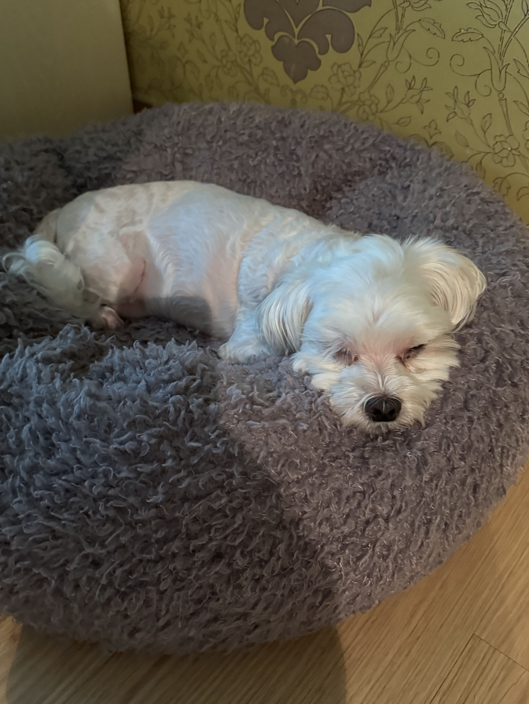
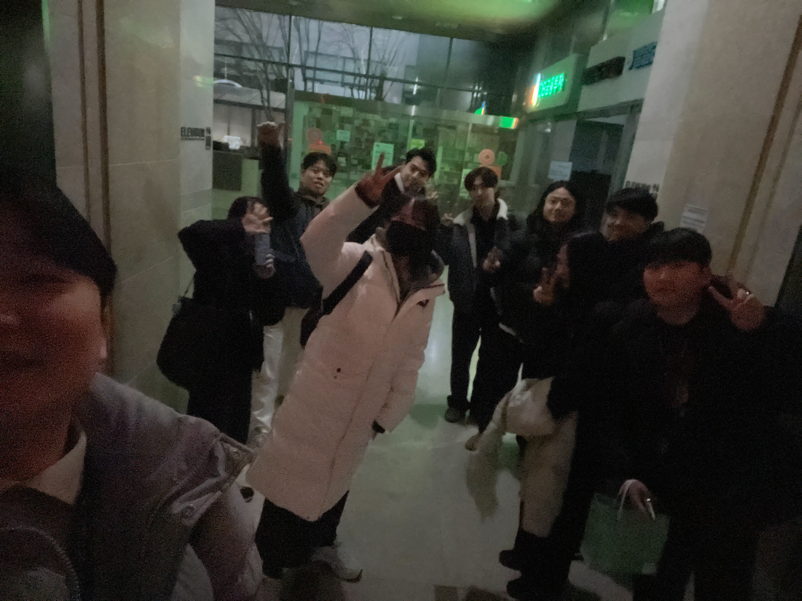
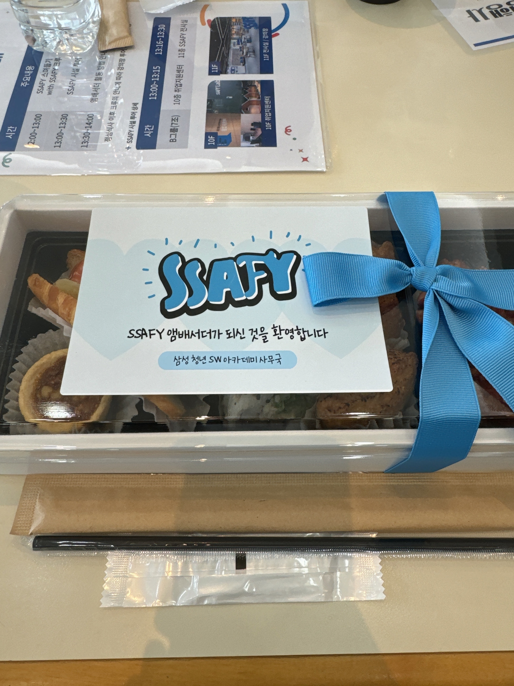
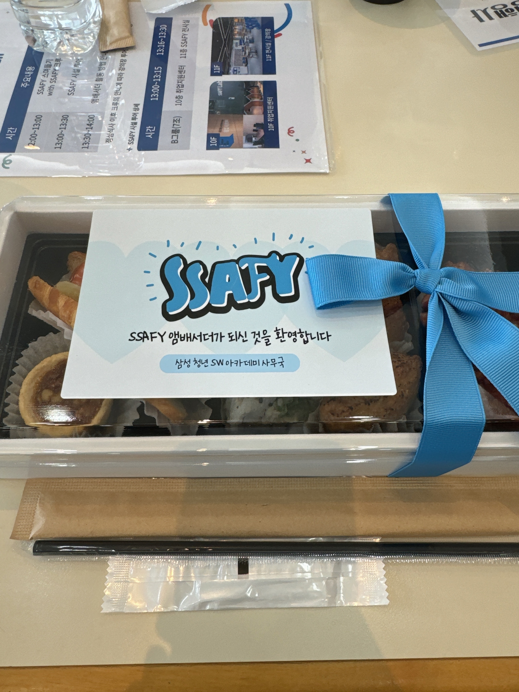
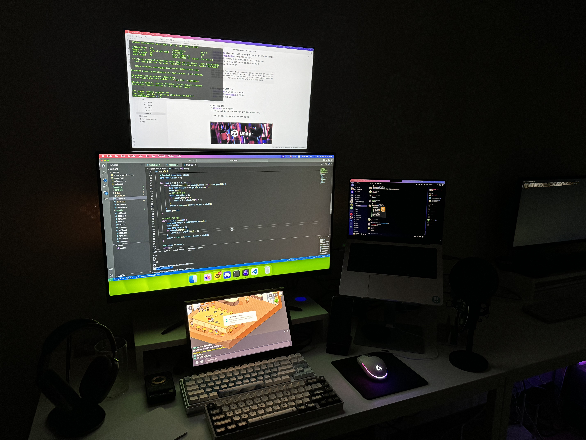
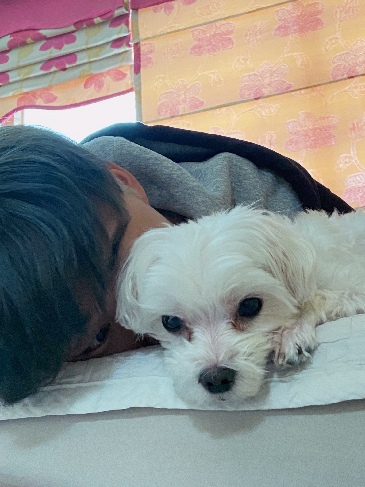
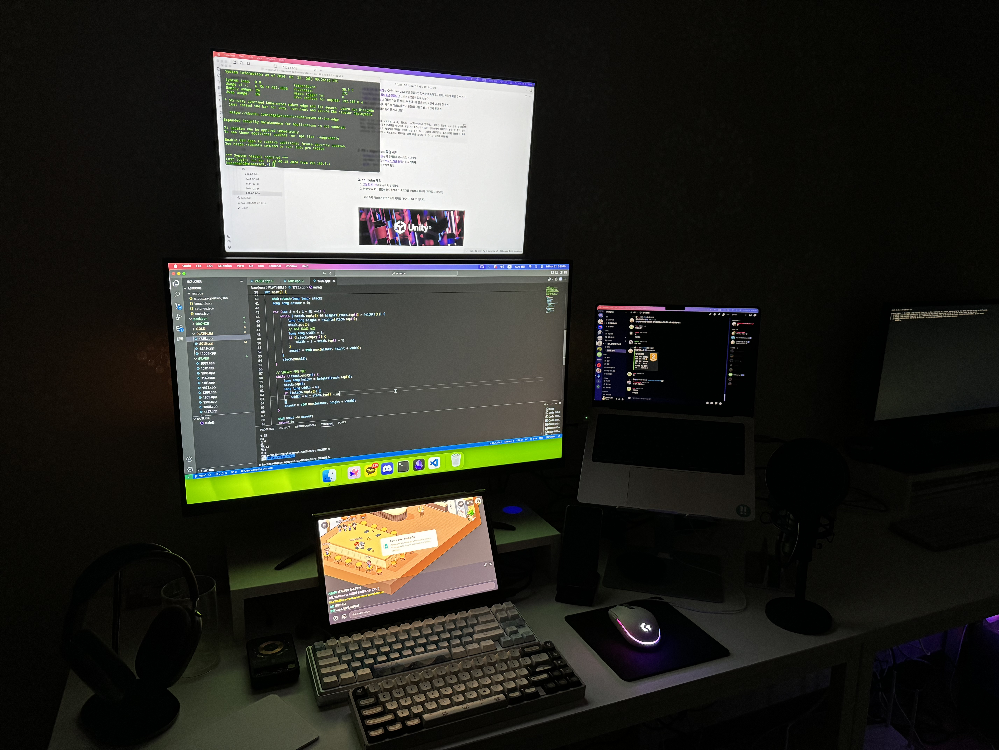
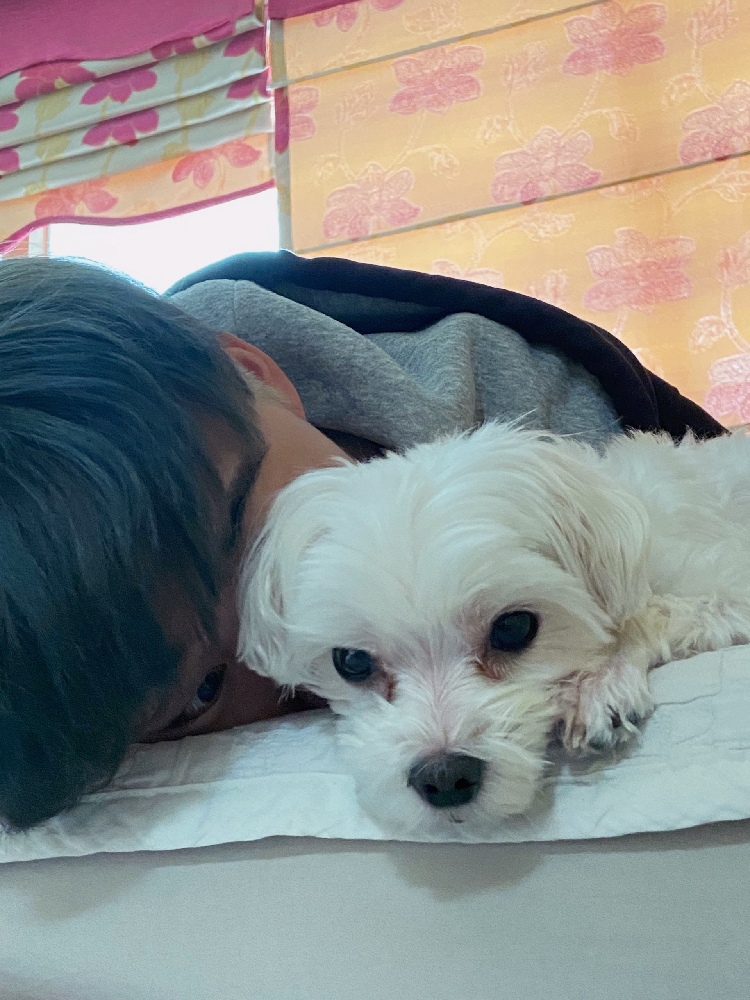

자기소개
안녕하세요! 저는 어제보다 더 나은 오늘을 꿈꾸며 살아가는 사람입니다. 세상이 정해놓은 길을 따르는 것보다, 스스로 의미 있다고 느끼는 방향으로 나아가는
걸 더 좋아해요. 때론 돌아가기도 하고, 길을 잃기도 하지만, 그 과정에서 저만의 길을 만들어가는 게 삶을 더 흥미롭게 만든다고 믿거든요. 어릴 때는 단순히
‘만들고 싶다’는 호기심에서 시작된 코딩이었어요. 하지만 시간이 지나면서, 저는 단순히 기능을 만드는 게 아니라, 세상에 어떤 영향을 미칠 수 있는지를
고민하게 되었어요. 그게 서비스가 되었든, 콘텐츠가 되었든, 저는 사람들이 더 편리하게, 혹은 더 즐겁게 살아갈 수 있는 무언가를 만드는 일에 가치를
느낍니다. 그래서 꼭 프로그래밍이 아니어도, 저를 필요로 하는 곳이라면 어디든 기꺼이 몰입할 준비가 되어 있어요. 대학교에 진학하면서 저는 배움이 단순히
‘지식을 채우는 일’이 아니라, ‘스스로를 탐구하는 과정’이라는 걸 깨달았어요. 학점이나 정해진 커리큘럼이 아니라, ‘내가 정말 알고 싶은 것’, ‘내가 진짜로
좋아하는 것’을 찾아가는 과정이 중요하다는 걸요. 그래서 결국 학교라는 틀을 벗어나, 독학의 길을 선택했습니다. 쉽지 않은 결정이었지만, 그만큼 더
주도적으로 배우고, 더 깊이 고민할 수 있는 시간이었어요. 혼자서 모든 걸 결정해야 했기에 두렵기도 했지만, 오히려 그런 불확실함이 저를 더 단단하게
만들어 주었어요. 저는 여전히 배우는 중이고, 앞으로도 계속 배울 거예요. 하지만 단순히 ‘잘하는 개발자’가 되는 것이 목표는 아닙니다. 저는 더 나은
세상을 만드는 데 기여하는 사람이 되고 싶어요. 때로는 아주 사소한 것일 수도 있지만, 누군가의 하루를 조금이라도 더 나아지게 만드는 것. 그런 일을
해나가는 게 저에게 가장 큰 의미와 즐거움을 줍니다. 그래서 저는, 저의 호기심과 에너지를 세상의 문제를 해결하는 데 쓰고 싶어요. 단순히 정답을 찾는
것이 아니라, 더 나은 질문을 던지는 사람이 되기 위해. 그리고 그렇게 찾은 답을, 세상과 나누기 위해. 앞으로도, 계속 나아가 볼게요. 더 좋은 세상을
꿈꾸면서. 😊✨
 



 

 





감상평